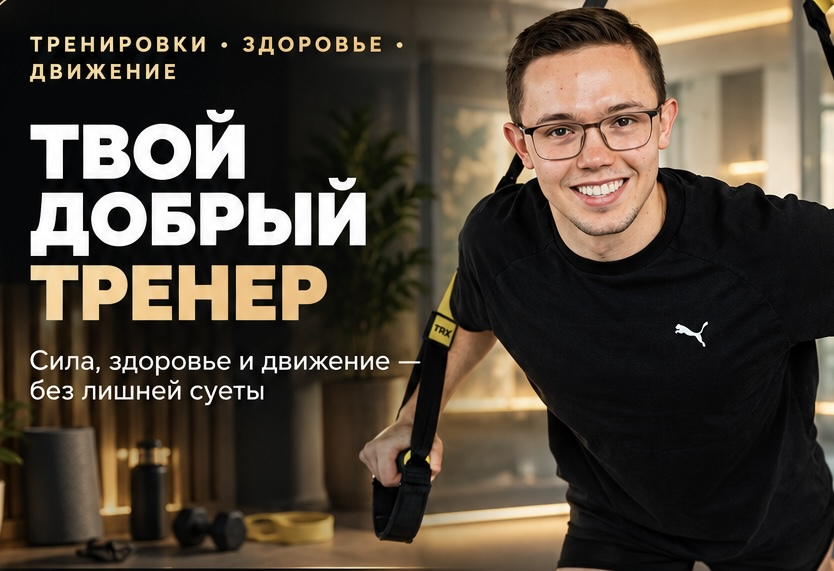
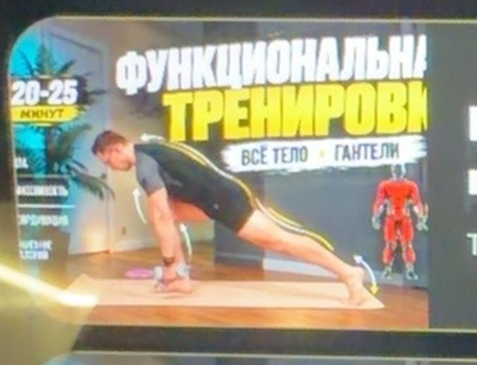

Круговая тренировка на всё тело
Базовая круговая работа на всё тело.

Все тренировки — новые сверху. Выбери категорию, если хочешь сузить список.

Базовая круговая работа на всё тело.
Сила и контроль. Минимум оборудования.
Спина, грудь, плечи и руки.
Суставы, амплитуда и контроль движения.
Подготовь тело к основной работе.
Тестовая тренировка для нижней части тела.
Тестовая тренировка для верхней части тела.
Контроль таза и доступная амплитуда.
Мобильность грудного отдела и плеч.
Подготовка к основной работе.
Все движения — новые сверху. Выбери направление, если хочешь найти нужную группу. Для функциональных — 3D, шаги, выпады и прыжки.
Техника, контроль коленей и корпуса
Работа ягодиц и стабилизация таза
Сила ног, баланс и контроль
Спина, лопатки и положение корпуса
3D-движение: вперёд, в сторону и по диагонали
Координация, сила и работа в нескольких плоскостях
Прыжок, мягкое приземление и контроль
Контроль в нижней точке
Стабильность коленей и таза
Односторонняя сила ног
Ягодицы и контроль таза
Односторонняя работа ягодиц
Отведение таза назад и контроль корпуса
Контроль корпуса и таза
Стабилизация корпуса
Боковая стабилизация
Сила верха и контроль корпуса
Лопатки и мышцы спины
Плечи и контроль корпуса
Контроль лопаток
Координация и таз
3D-контроль и баланс
Контроль грудного отдела
Баланс и координация
Икроножные и стабильность стопы
Материалы, которые помогают лучше понимать своё тело, питание и тренировки.
Базовые принципы: калории, БЖУ, похудение, набор и принцип тарелки.
ЧСС, зоны нагрузки, измерение пульса и ориентиры для тренировок.
Что делать между тренировками: сон, питание, движение, массаж и другие способы.
Базовые упражнения в видео: как выполнять движение правильно, на что обратить внимание и какие ошибки не допускать.
Короткие видео с разбором базовых движений. Нажми на упражнение, чтобы посмотреть технику и основные акценты.
Положение таза, работа ягодиц и контроль движения без переразгибания поясницы.
База · ягодицыКак двигаться тазом назад, сохранять нейтральное положение позвоночника и контролировать корпус.
База · задняя цепьСтопа, колено, таз и корпус: основные ориентиры для уверенного приседа.
База · ногиКонтроль опоры, положение колена и таза, устойчивость и направление движения.
База · ногиКак удерживать корпус и таз, не теряя контроль при движении рук и ног.
База · корТестовое большое видео Yandex Cloud Video.
Практическая система: энергия, белок, качество рациона, режим, питание вокруг тренировок и спортивные добавки. Без запретов ради запретов и без обещаний «разогнать метаболизм».
Получишь не «идеальную цифру», а стартовый ориентир: примерный расход энергии и диапазон для выбранной цели.
Главное правило: здоровый рацион должен быть достаточным, сбалансированным, умеренным и разнообразным. Основа — преимущественно минимально обработанные продукты, овощи и фрукты, цельные злаки, бобовые и подходящие источники белка.
Удобный визуальный ориентир: около половины тарелки — овощи/зелень, четверть — белковый продукт, четверть — источник углеводов. Это не математический закон, а простой способ собрать полноценный приём пищи.
Для снижения массы тела в среднем нужен дефицит энергии: организм расходует больше энергии, чем получает с пищей. Не требуется убирать ужин, хлеб или углеводы сами по себе.
Если вес не меняется несколько недель, корректировать стоит общий рацион и/или активность, а не искать «магическое» время последнего приёма пищи.
Для набора массы обычно нужен небольшой профицит энергии, достаточный белок и прогрессирующие силовые тренировки. Большой избыток калорий ускоряет набор общей массы, но не пропорционально ускоряет рост мышц.
Для регулярно тренирующихся людей практичный ориентир часто находится примерно в диапазоне 1,6–2,0 г белка/кг массы тела в сутки, с поправкой на индивидуальные условия. Это ориентир, а не обязательная цифра для каждого человека.
Не нужно строить набор только на белке. Углеводы помогают обеспечивать тренировочную работу, а жиры важны для нормального рациона. Остаток калорий можно распределять между ними в зависимости от предпочтений и переносимости.
Количество приёмов пищи не «разгоняет» метаболизм. Можно есть 3, 4 или 5 раз в день — выбор зависит от аппетита, графика, тренировок и удобства.
Нет необходимости выдерживать строго 3 или 6 часов между приёмами пищи и нет универсального правила «не есть после 18:00».
Стабильный режим сна и достаточная продолжительность сна важны для восстановления, аппетита и качества тренировок.
Планирование заранее снижает вероятность случайных перекусов и помогает вписать любимые продукты в общий рацион.
Не обязательно готовить десять разных блюд. Повторяемая база может быть удобнее, а разнообразие можно получать заменой отдельных продуктов.
Один праздничный приём пищи не отменяет результат. Не нужно «наказывать» себя голоданием до застолья или компенсировать его экстремальными ограничениями на следующий день.
Лучше прийти умеренно голодным: обычный приём пищи с белком и клетчаткой обычно помогает контролировать аппетит.
Вернись к обычному рациону. Кратковременный рост веса после солёной и углеводной еды часто связан с водой и содержимым ЖКТ, а не только с жировой тканью.
Алкоголь добавляет энергию и может ухудшать сон, восстановление и контроль аппетита. Чем больше доза, тем выше вероятность негативных эффектов. Не стоит представлять алкоголь как «часть жиросжигания» или как способ улучшить восстановление.
Добавки — дополнение к рациону, а не замена нормального питания. Сначала закрываем энергию, белок, сон и тренировочный процесс.
Обычный пищевой белок в удобной форме. Сывороточный, казеиновый, соевый и другие варианты могут использоваться, если помогают добрать белок. Сам по себе протеин не является «химией» и не создаёт мышцы без тренировок.
Добавим современный блок: креатин моногидрат — одна из наиболее изученных спортивных добавок для повышения способности выполнять высокоинтенсивную работу и поддержки прироста безжировой массы в сочетании с тренировками. Типичная поддерживающая схема — 3–5 г в сутки; специальное «окно» после тренировки не требуется.
Может повышать бодрость и снижать субъективную тяжесть нагрузки у некоторых людей. Но поздний приём способен ухудшать сон, поэтому дозу и время стоит подбирать индивидуально.
Имеют смысл прежде всего при соответствующих особенностях рациона или дефицитах/показаниях. Не нужно принимать большие дозы «на всякий случай».
BCAA, глутамин, L-карнитин, «жиросжигатели» и сложные предтренировочные комплексы не являются базовой необходимостью для обычного человека. Эффект зависит от конкретного вещества, дозы, питания и контекста.
За 1–3 часа до тренировки можно съесть обычный приём пищи с белком и углеводами. Чем ближе тренировка, тем меньше и проще может быть порция. Жирную и очень объёмную еду стоит учитывать по собственной переносимости.
Не нужно успевать поесть за «30 минут, иначе всё пропало». Важнее общий суточный белок и энергия. После тренировки удобно сделать обычный приём пищи с белком и углеводами.
Еда после тренировки допустима. Не нужно исключать белок или углеводы только из-за времени на часах. Если большой объём пищи мешает сну, выбери более лёгкий вариант.
Целлюлит — распространённое состояние кожи и подкожной ткани. Он не является показателем того, что человек «плохо питается» или недостаточно тренируется.
Массаж и некоторые косметические процедуры могут временно менять внешний вид кожи за счёт отёка/жидкости и механического воздействия, но не являются способом локально сжечь жир. Обёртывания также не заменяют питание и тренировки.
ЧСС — частота сердечных сокращений, то есть количество ударов сердца в минуту. Пульс помогает оценивать интенсивность нагрузки, но не является единственным показателем самочувствия.
Введи возраст — приложение даст ориентировочную максимальную ЧСС и автоматически разобьёт её на 5 условных зон. Для расчёта используем формулу 208 − 0,7 × возраст. Это оценка, а не индивидуально измеренный максимум.
Самый удобный вариант — спортивные часы или нагрудный датчик. Вручную можно найти пульс на запястье или шее и посчитать удары за 15 секунд, затем умножить результат на 4.
На силовой ЧСС может резко меняться от подхода к подходу. Поэтому не стоит пытаться всё время удерживать одну цифру. Смотри одновременно на технику, дыхание, субъективную тяжесть и восстановление между подходами.
Более высокий пульс обычно означает более высокую интенсивность работы, но пульс сам по себе не показывает точный расход калорий. Часы и приложения дают оценку, а не прямое измерение.
При боли в груди, выраженной одышке, головокружении, обморочном состоянии или необычном сердцебиении тренировку нужно прекратить и обратиться за медицинской помощью.
Восстановление — это не одна процедура. Сначала закрываем базу: сон, достаточное питание, жидкость и разумную тренировочную нагрузку. Остальные методы могут быть полезны как дополнение — главным образом для самочувствия, боли, расслабления или кратковременного восстановления работоспособности.
Лёгкое движение может быть полезным, если оно помогает почувствовать себя лучше и не добавляет заметного тренировочного стресса.
Ты тренируешься — я нахожусь с тобой на видеосвязи, вижу выполнение упражнений в моменте, слежу за техникой и сразу корректирую движение, темп и нагрузку.
Я персональный и групповой тренер. Мой путь начался с танцев и постоянной работы с движением. Затем я продолжил обучение в направлениях TRX и stretching, функционального и нейромоторного тренинга, а также продолжаю развиваться в Pilates.
За 7 лет официальной тренерской работы я работал с людьми разного уровня — от тех, кто только начинает, до тех, кто возвращается к тренировкам после большого перерыва.
Мне важно не просто дать человеку упражнения, а увидеть, как именно он двигается, почувствовать его состояние и подобрать нагрузку, от которой есть результат без ненужного давления.
Формат особенно удобен, если ты хочешь заниматься дома, не хочешь тратить время на дорогу в зал, давно не тренировался или просто хочешь научиться выполнять упражнения качественно и безопасно.
Перед началом обсуждаем цель, самочувствие, предыдущий опыт, ограничения и условия для тренировки.
Я адаптирую упражнения и интенсивность под твоё текущее состояние, уровень и оборудование.
Мы созваниваемся напрямую. Я постоянно вижу тебя и могу сразу скорректировать технику, амплитуду, темп или упражнение.
Когда тело готово, меняем упражнения или увеличиваем нагрузку. Если сегодня состояние другое — тренировку можно адаптировать.
Минимум — телефон, планшет или ноутбук с интернетом и место, где я смогу видеть тебя в полный рост. Коврик и фитнес-резинки пригодятся, но программа может быть построена и без них. Если есть гантели, гири или другой инвентарь — добавим его по необходимости.
Я не занимаюсь медицинской реабилитацией и не заменяю врача или реабилитолога. Если после операции или при заболевании тебе уже разрешена физическая активность, мы можем обсуждать базовую тренировочную работу в пределах разрешённой нагрузки. Сложные случаи и медицинская реабилитация — зона профильного специалиста.
Тренировка может быть сложной, но не должна быть наказанием. Для меня хороший результат — когда ты лучше чувствуешь тело, увереннее двигаешься, становишься сильнее и начинаешь делать то, что раньше не получалось.
Заморозка абонемента — до 2 недель. Расписание согласовываем заранее, чтобы тренировки удобно вписывались в твою неделю.
Напиши мне о своей цели, текущем уровне и том, что сейчас мешает тебе тренироваться. Обсудим формат и поймём, подходит ли тебе персональная работа.
Твои выбранные движения уже в порядке тренировки. Настрой интервалы и запускай.
Сохраняй тренировки и упражнения, чтобы быстро находить их снова.
Ниже — основные способы построения тренировки. Выбери любой вариант, чтобы увидеть принцип, объём и пример.